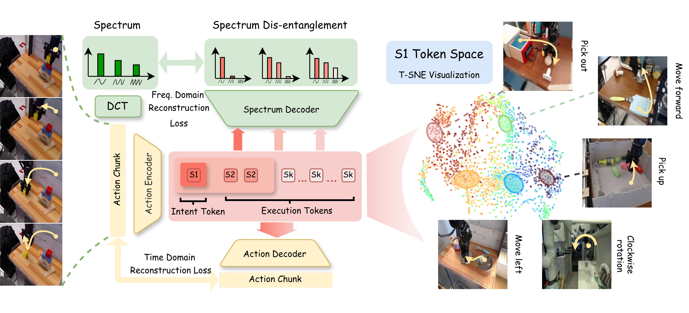
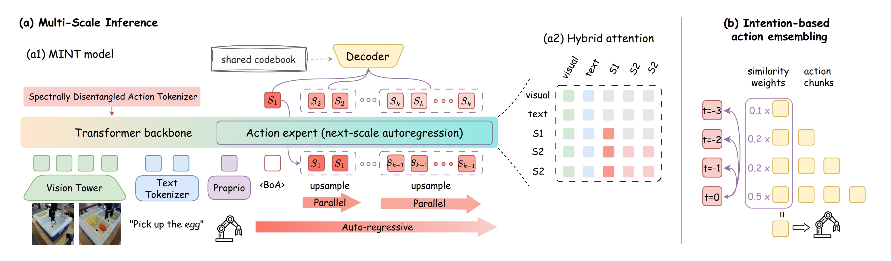

Mimic Intent, Not Just Trajectories

SDAT maps each action chunk into multi-scale tokens: coarse tokens capture intent, and fine tokens capture execution details. The S1 token space forms behavior-level clusters.

MINT predicts tokens from intent to execution with next-scale autoregression, then decodes them into actions. Intent-based ensemble improves long-horizon stability.
Abstract
While imitation learning has achieved impressive success in dexterous manipulation through generative modeling and pretraining, state-of-the-art approaches such as Vision-Language-Action models still struggle with adapting to environmental changes and transferring skills. We argue that this limitation arises from mimicking raw trajectories without understanding the underlying intent. To address this, we propose MINT (Mimic Intent, Not Just Trajectories), which explicitly disentangles behavior intent from execution details in end-to-end imitation learning through multi-scale frequency-space tokenization. Our method learns action tokens with a coarse-to-fine spectral hierarchy, where the coarsest token captures low-frequency global structure and finer tokens encode high-frequency execution details, yielding an abstract Intent Token for planning and transfer and multi-scale Execution Tokens for precise adaptation to environmental dynamics. Building on this hierarchy, the policy generates trajectories via next-scale autoregression, performing progressive intent-to-execution reasoning that improves learning efficiency and generalization. Crucially, this disentanglement enables one-shot skill transfer by simply injecting the Intent Token from a demonstration into the autoregressive generation process. Experiments on multiple manipulation benchmarks and a real robot demonstrate state-of-the-art success rates, superior inference efficiency, robust generalization under disturbances, and effective one-shot transfer.
Highlights
- Disentangle intent vs. execution with multi-scale frequency-space action tokenization (SDAT): the coarsest token captures low-frequency global structure (intent), while finer tokens model high-frequency residuals (execution).
- Intent-to-execution reasoning via next-scale autoregression: autoregressive across scales, parallel within each scale.
- One-shot transfer by extracting an intent token from a single demo and injecting it during generation.
Intent Tokens
separating what to do from how to execute
98.3% / 80.1%
LIBERO Avg. / LIBERO-Plus Avg.
30M & 4B
both lightweight and large policy regimes
One-Shot Transfer
+ Intent Ensemble
Video Presentation
Results
Performance Comparison
- Generality Across Scales: Both the lightweight MINT-30M and the large-scale MINT-4B achieve state-of-the-art success rates, demonstrating the universal effectiveness of spectral disentanglement regardless of underlying model capacity.
- Benchmark Superiority: MINT consistently surpasses strong VLA baselines across three fundamentally distinct benchmarks (LIBERO, CALVIN, and MetaWorld), validating its superior capacity for stable long-horizon reasoning and precise control.
| Method | SPATIAL | OBJECT | GOAL | LONG | Avg. |
|---|---|---|---|---|---|
| Without Pre-training | |||||
| Diffusion Policy | 78.3 | 92.5 | 68.3 | 50.5 | 72.4 |
| MDT | 78.5 | 87.5 | 73.5 | 64.8 | 76.1 |
| WorldVLA | 87.6 | 96.2 | 83.4 | 60.0 | 81.8 |
| SmolVLA | 93.0 | 94.0 | 91.0 | 77.0 | 88.8 |
| MINT-30M | 98.6 | 99.2 | 97.4 | 93.2 | 97.1 |
| With Pre-training | |||||
| LAPA | 73.8 | 74.6 | 58.8 | 55.4 | 65.7 |
| OpenVLA | 84.7 | 88.4 | 79.2 | 53.7 | 76.5 |
| π0-FAST | 96.4 | 96.8 | 88.6 | 60.2 | 85.5 |
| π0 | 90.0 | 86.0 | 95.0 | 73.0 | 86.0 |
| UniVLA | 96.5 | 96.8 | 95.6 | 92.0 | 95.2 |
| OpenVLA-OFT | 96.9 | 98.1 | 95.6 | 91.1 | 95.4 |
| π0.5 | 98.8 | 98.2 | 98.0 | 92.4 | 96.9 |
| MINT-4B | 97.4 | 99.6 | 98.2 | 97.8 | 98.3 |
| Method | @1 | @2 | @3 | @4 | @5 | Len |
|---|---|---|---|---|---|---|
| RT-1 | 84.4 | 61.7 | 43.8 | 32.3 | 22.7 | 2.45 |
| Robo-Flamingo | 96.4 | 89.6 | 82.4 | 74.0 | 66.0 | 4.09 |
| π0.5 | 94.2 | 89.3 | 82.7 | 78.5 | 70.3 | 4.15 |
| UnifiedVLA | 97.9 | 94.8 | 89.2 | 82.8 | 75.1 | 4.34 |
| RoboVLMs | 96.7 | 93.0 | 89.9 | 86.5 | 82.6 | 4.49 |
| MINT-4B | 97.4 | 94.2 | 91.7 | 88.2 | 86.1 | 4.57 |
| Method | Easy | Medium | Hard | Very Hard | Avg. |
|---|---|---|---|---|---|
| Diffusion Policy | 23.1 | 10.7 | 1.9 | 6.1 | 10.5 |
| TinyVLA | 77.6 | 21.5 | 11.4 | 15.8 | 31.6 |
| π0 | 77.9 | 51.8 | 53.3 | 20.0 | 50.8 |
| MINT-4B | 82.1 | 72.4 | 58.3 | 56.0 | 67.2 |
Generalization
- Robust Invariance: Performance remains remarkably stable across seven distinct distribution shifts in the LIBERO-Plus suite, validating that decoupling intent from high-frequency execution drastically improves robustness to variations.
- Perturbation Resilience: By securely abstracting behavioral intent, the policy sidesteps spurious environmental cues, achieving up to an absolute 15% success rate jump over baseline models under intense visual, linguistic, and physical disturbances.
| Method | Camera | Robot | Lang. | Light | Back. | Noise | Layout | Avg. |
|---|---|---|---|---|---|---|---|---|
| OpenVLA | 0.8 | 3.5 | 23.0 | 8.1 | 34.8 | 15.2 | 28.5 | 16.3 |
| UniVLA | 1.8 | 46.2 | 69.9 | 69.0 | 81.0 | 21.2 | 31.9 | 45.9 |
| π0 | 13.8 | 6.0 | 58.8 | 85.0 | 81.4 | 79.0 | 68.9 | 56.1 |
| π0-FAST | 65.1 | 21.6 | 61.0 | 73.2 | 73.2 | 74.4 | 68.8 | 62.5 |
| OpenVLA-OFT | 56.4 | 31.9 | 79.5 | 88.7 | 93.3 | 75.8 | 74.2 | 71.4 |
| π0.5 | 53.0 | 50.3 | 65.7 | 83.1 | 77.3 | 53.2 | 72.7 | 65.0 |
| MINT-30M | 61.4 | 41.2 | 61.6 | 92.2 | 77.1 | 76.5 | 76.2 | 69.5 |
| MINT-4B | 72.2 | 42.4 | 85.8 | 96.6 | 88.9 | 90.1 | 84.6 | 80.1 |
| Trained with LIBERO Plus | ||||||||
| OpenVLA-OFT+ | 92.8 | 30.3 | 85.8 | 94.9 | 93.9 | 89.3 | 77.6 | 80.7 |
| π0.5+ | 67.2 | 42.4 | 59.4 | 75.8 | 74.9 | 72.6 | 64.5 | 65.3 |
| MINT-4B+ | 95.6 | 44.6 | 84.7 | 95.1 | 94.5 | 95.2 | 78.7 | 84.1 |
Loading robustness videos…
One-shot Transfer via Intent Token Injection
- Zero-Gradient Adaptation: By extracting and injecting an explicit intent token from just a single demonstration, MINT achieves highly controllable zero-gradient transfer that significantly outperforms conventional fine-tuning techniques.
- Compositional Generalization: Utilizing the intent token as a grounded task specification fundamentally enables the policy to transfer complex skills effectively to completely novel task semantics, layouts, and heavily extended horizons.
| Method | Task Specification |
New Task |
New Layout |
Extend Horizon |
Avg. |
|---|---|---|---|---|---|
| Replay | Replay | 0.28 | 0.12 | 0.04 | 0.11 |
| Fine-tune (MINT-30M) | Language | 0.42 | 0.08 | 0.00 | 0.17 |
| Intent-injection (MINT-Zero-30M) | Intent | 0.90 | 0.68 | 0.72 | 0.77 |
Loading one-shot transfer videos…
Real-World Experiments
- Sample Efficiency: MINT flawlessly bridges the sim-to-real gap demanding remarkably few resources—mastering intricate tasks with merely ~20 demonstrations per task, outpacing standard generalist agents.
- Execution reliability: The underlying structural disentanglement helps the policy negotiate unmodeled real-world kinematics and sensory imperfections smoothly, securing robust precision tasks and zero-shot novel geometry deployment.
Loading real-world videos…
Ablations
- SDAT is the Core Engine: Substituting our spectral scale-wise reconstruction with standard time-domain loss cascades into performance drops, confirming that explicit frequency-space mapping is the pivotal mechanism separating true intent from execution artifacts.
- Intent Ensemble Balances Tradeoffs: Utilizing an intent-based dynamic action aggregation strategically combines sequence stability essential for long horizons with rapid flexibility needed during complex behavioral switching.
| Ablation Setting | CALVIN | LIBERO |
|---|---|---|
| Terminal Time-Domain Loss | 4.36 | 87.8 |
| + Terminal Spectral Loss | 4.41 | 88.2 |
| + Scale-Wise Time Loss | 4.06 | 82.8 |
| + Scale-Wise Spectral Loss | 4.54 | 93.4 |
| Ablation Setting | CALVIN | LIBERO |
|---|---|---|
| No Ensemble | 4.09 | 85.8 |
| Temporal Ensemble | 4.32 | 89.2 |
| Action Ensemble | 4.10 | 90.4 |
| Intent Ensemble | 4.57 | 93.2 |
BibTeX
@article{huang2026mimic,
title={Mimic Intent, Not Just Trajectories},
author={Huang, Renming and Zeng, Chendong and Tang, Wenjing and Cai, jintian and Lu, Cewu and Cai, Panpan},
journal={arXiv preprint arXiv:2602.08602},
year={2026}
}